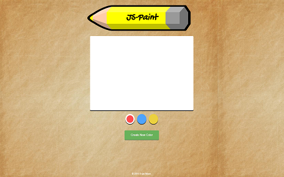

Default Canvas Appearance

I wanted to further explore jQuery's functionality by expanding on my previous project. I created an interactive
drawing application which used the HTML5 canvas element, as well as a custom div for the color input sliders using rgb values.
I used a simple unordered list to display the selectable colors, and to append new colors created by the user.
I used jQuery's
built-in methods to flesh out the color customization feature and learn more about DOM traversal. Additionally, I experimented with
mouse events alongside HTML5's canvas methods to implement the drawing functionality.